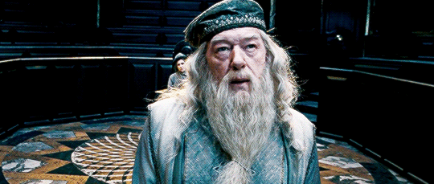
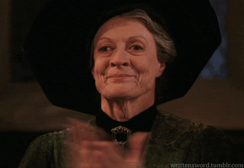
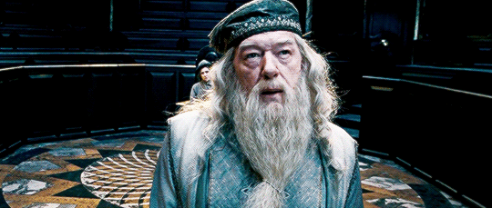
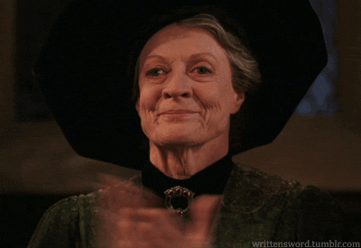

Grifinória(do inglês "Gryffindor") é uma das quatro casas de Hogwarts. Seu fundador, Godric Gryffindor, prezava por aqueles que tinham bravura, coragem e lealdade. Eles também tem uma teimosia invejável. São feiticeiros ilustres e incríveis em um duelo. As cores desta casa são o dourado e o vermelho e seu símbolo é um leão. O fantasma da Grifinória é o Nick-Quase-Sem-Cabeça, que foi executado em 1942 mas, continuou com uma pequena parte da cabeça presa ao corpo.
 


